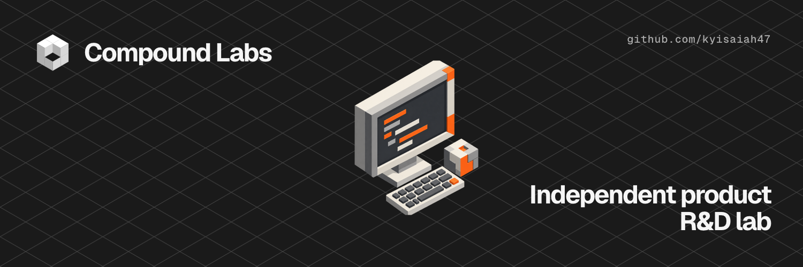
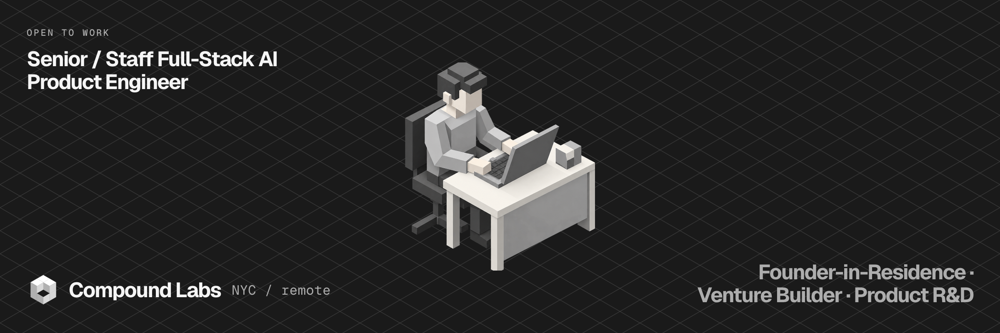
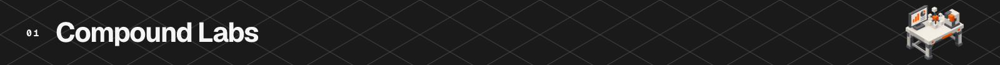

Full-time · NYC or remote · US citizen · no sponsorship required. Send me the role →
I have 8+ years as a full-stack engineer, including 3+ at senior level. I do my best work on ambiguous 0→1 builds where I can own the path from research and product strategy through UX, engineering, launch, and operation.

Compound Labs is my independent product R&D lab. I research opportunities and underserved problems, turn the strongest ones into working software, launch them, and operate the systems behind them.
The products are deliberately not confined to one category. The range—applied AI, accessibility compliance, cybersecurity readiness, developer tools, data products, workflow automation, and consumer experiments—is part of the research.
| Product | What it does |
|---|---|
| Compound MCP | Eleven keyless tools that give agents current model routing and pricing, dependency health, stack costs, agent-skill discovery, registry search, and public compliance data. |
| ParseRail | Production AI back end with 44 endpoints, four SDKs, MCP, structured outputs, model routing, per-call telemetry, and evaluation gates. |
| AgentWire | Searchable index of shipped MCP servers, coding-agent harnesses, and frameworks, built from repository activity and technical signals. |
| SkillWorks | Nightly rebuilt directory of Claude Code skills, subagents, plugins, and marketplaces with a reproducible 0–100 quality score. |
| RuleStack | AGENTS.md gallery and comparison engine covering eight agent-instruction formats, real repository adoption, stack evidence, and file-level diffs. |
| Toolproof | Independent measurement layer for AI agent tooling: execution-tested indexes, a published methodology, and open data. |
I was the division’s only web engineer, owning frontend architecture and cross-functional delivery across six enterprise applications.
Core stack
TypeScript · Next.js 16 ·
React 19 · Tailwind v4 · Node.js
· Python · Java Spring Boot ·
Postgres · Supabase RLS · Stripe
· MCP · Playwright · AWS ·
Vercel
Product and AI systems
Applied AI and agents · structured outputs · model routing · evals · multi-tenant architecture · billing · data pipelines · browser automation · analytics · SEO · content and publishing systems
Open to Senior / Staff Full-Stack AI Product Engineer roles.
Email · LinkedIn · Compound Labs · Buy me a coffee
New York City · remote · US citizen · no sponsorship required